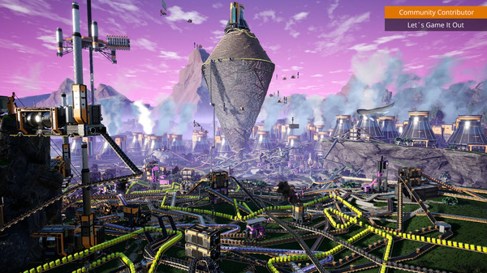
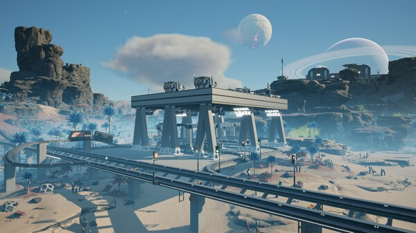
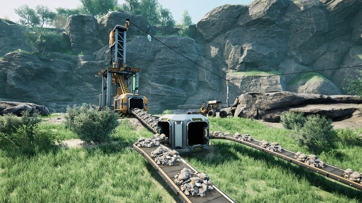
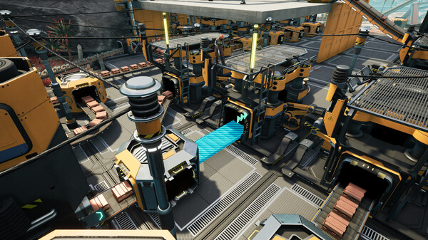

GAMING WORLD
GAMING WORLD




Satisfactory is a first-person open-world factory building game with a dash of exploration and combat. Play alone or with friends, explore an alien planet, create multi-story factories, and enter conveyor belt heaven!
Construct
Conquer nature by building massive factories across the land. Expand wherever and however you want. The planet is filled with valuable natural resources just waiting to be utilized. As an employee of FICSIT it's your duty to make sure they come to good use.
Automate
Construct your factories with gracious perfection or build intricate webs of conveyor belts to supply all your needs. Automate trucks and trains to reach your faraway outposts and be sure to handle liquids properly by transporting them in pipes. It's all about minimizing manual labour!
Explore & Exploit
Venture on expeditions to search for new materials and be sure to put everything to good use. Nature is yours to harvest! You have vehicles, jetpacks, jump pads and more at your disposal to make the exploration easier. Equip the proper safety gear as well, just in case you run into the local wildlife.
Source: Steam
OS
Windows 11
Processor
Ryzen 5 5600X or i5-12400 or equivalent performance, 6 physical cores minimum
Memory
16 GB RAM
Graphics
Nvidia RTX 2070 or RX 5700, or equivalent performance & VRAM
DirectX
Version 12
Storage
20 GB available space

Satisfactory is a first-person open-world factory building game with a dash of exploration and combat. Play alone or with friends, explore an alien planet, create multi-story factories, and enter conveyor belt heaven!
Simulation
Building
Open World
Strategy
Multiplayer
Crafting
Release Date
10 September 2024
Developers
Coffee Stain Studios
Platforms
Microsoft Windows
Publisher
Coffee Stain Publishing